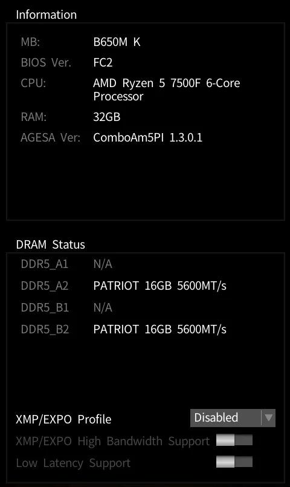

전원
게임 중 재부팅 원인과 점검 순서
게임이나 부하 상황에서만 재부팅되는 경우
이 증상은 질문에 답하며 해볼 것을 한 단계씩 따라 할 수 있습니다. 준비물과 자세한 방법을 보여 주고, 직접 하기 어려우면 문의로 이어집니다. 컴퓨터 안 켜질 때 자가진단 시작하기 →
게임 중 재부팅은 부하가 올라갈 때만 문제를 드러내는 대표적인 증상입니다. 평소에는 멀쩡해 보여도 전원 공급, 온도, 그래픽 드라이버가 한계에 닿으면 갑자기 꺼질 수 있습니다.
이 증상은 소프트웨어보다 하드웨어 신호가 더 강하게 드러나는 편이라, 온도와 파워 용량을 먼저 보는 것이 중요합니다. 특히 업그레이드 이후 시작됐다면 전원과 쿨링 설계를 함께 확인해야 합니다.
아래 항목은 재부팅이 반복되는 원인을 체계적으로 나눠 보는 데 도움이 됩니다.
파워 서플라이는 겉보기에 멀쩡해도 사용 연차가 오래될수록 순간적으로 높은 전력을 요구하는 상황(그래픽카드 부하가 치솟는 순간)에서 전압을 안정적으로 유지하지 못하는 경우가 있습니다. 이런 열화는 평소 사용에는 티가 안 나다가 게임처럼 순간 부하가 큰 작업에서만 드러나기 때문에, 파워가 산 지 3~4년이 넘었다면 정격 용량이 충분해 보여도 노후화 자체를 의심해볼 필요가 있습니다.
이 가이드가 필요한 상황
- 게임 실행 직후 또는 몇 분 뒤에만 재부팅된다.
- 오버클럭을 켜면 더 빨리 꺼진다.
- 팬 소음과 발열이 급격히 올라간다.
먼저 확인할 항목
- 온도와 전력부터 확인 — 부하 상황에서만 꺼진다면 발열과 전원 부족 가능성이 큽니다. CPU/GPU 온도와 파워 용량, 보조전원 연결을 함께 봅니다.
- 그래픽 드라이버 재설치 — 화면 출력 장치가 멈추면 시스템이 전체 재부팅으로 이어질 수 있습니다. 안정 버전 드라이버로 다시 설치해 보세요.
- 오버클럭/튜닝 해제 — 불안정한 전압이나 메모리 세팅이 원인일 수 있습니다. XMP/EXPO와 CPU/GPU 튜닝 값을 기본으로 돌려봅니다. 아래는 Gigabyte 메인보드 BIOS의 Easy Mode 화면 예시입니다. 왼쪽 아래 "XMP/EXPO Profile" 항목에서 메모리 프로파일 적용 여부를 볼 수 있고, 이 예시는 Disabled(적용 안 함)로 표시되어 있습니다. 메뉴 이름과 위치는 제조사와 BIOS 버전마다 다릅니다.

- 그래픽카드 보조전원 케이블 구성 확인 — 고성능 그래픽카드는 부하 순간에 전력을 크게 끌어 쓰므로, 케이블 구성이 부족하면 게임 중에만 전원이 끊겨 재부팅됩니다. 8핀이 2개 이상 필요한 그래픽카드는 파워에서 케이블을 각각 따로 연결하고, 16핀(12VHPWR) 커넥터는 틈 없이 끝까지 꽂혔는지 확인하세요.
원인을 더 정확히 나누는 방법
게임에서만 멈추는 이유
게임은 CPU, GPU, 메모리, 디스크를 동시에 많이 씁니다. 평소에는 괜찮다가 게임에서만 꺼진다면, 단순 윈도우 문제가 아니라 전력부족이나 냉각 한계가 드러난 것일 수 있습니다.
메모리(RAM) 불안정도 같은 증상을 만듦
XMP·EXPO로 메모리 클럭을 끌어올린 상태에서 램이 그 속도를 완전히 지원하지 못하면, 평소에는 멀쩡하다가 게임처럼 메모리를 많이 쓰는 작업에서만 재부팅되거나 블루스크린이 날 수 있습니다. XMP/EXPO를 끈 기본 속도에서도 같은 증상이 재현되는지 비교해보면 메모리 문제인지 구분할 수 있습니다.
이벤트 뷰어의 Kernel-Power 41로 확인하는 방법
재부팅 원인을 시스템이 직접 느꼈다면, 이벤트 뷰어의 Windows 로그 → 시스템에서 'Kernel-Power' 41번 이벤트가 재부팅 직전 시각에 기록됩니다. 왜 꺼졌는지 설명하지는 않지만, 정상 종료가 아니라 전원이 갑자기 끊겼다는 것을 확인해주는 단서입니다.
확인 결과에 따른 다음 단계
- 오버클럭이 켜져 있다면 — 오버클럭 상태에서만 재부팅된다면 먼저 기본값으로 돌려 안정성부터 확인해야 합니다.
- 온도는 정상인데 꺼진다면 — 온도보다 전원 공급이 더 의심되며, 파워 용량과 보조전원 연결 상태를 더 봐야 합니다.
피해야 할 실수
- 게임만 삭제하고 끝내는 것
- 전원부와 쿨링을 확인하지 않는 것
- 메모리 오버클럭 상태를 확인하지 않는 것
- 이벤트 뷰어 로그를 확인하지 않고 바로 부품을 교체하는 것
자주 묻는 질문
- 데스크톱인데도 전원 부족이 있나요? 있습니다. 파워 용량이 부족하거나 노후되었거나, 그래픽카드 보조전원이 불안정하면 같은 증상이 날 수 있습니다.
- 메모리 오버클럭이 재부팅의 원인인지 어떻게 확인하나요? BIOS에서 XMP·EXPO를 꺼서 메모리를 기본 속도로 되돌린 뒤 같은 게임을 실행해보세요. 기본 속도에서 재현되지 않는다면 메모리 오버클럭이 원인입니다.
이 증상과 함께 나타나는 오류 코드
- 0x0000001A · MEMORY_MANAGEMENT
- 0x00000116 · VIDEO_TDR_FAILURE
- 0x000000EA · THREAD_STUCK_IN_DEVICE_DRIVER
- 0x0000009C · MACHINE_CHECK_EXCEPTION
- 0x00000124 · WHEA_UNCORRECTABLE_ERROR
블로그에서 점검 과정 보기
이 증상은 운영자의 네이버 블로그에도 단계별로 정리해 두었습니다. 게임 중 컴퓨터가 갑자기 재부팅될 때, 부품 교체 전에 확인할 순서 (온도·전원·드라이버·메모리)
최종 검토일: 2026-10-15